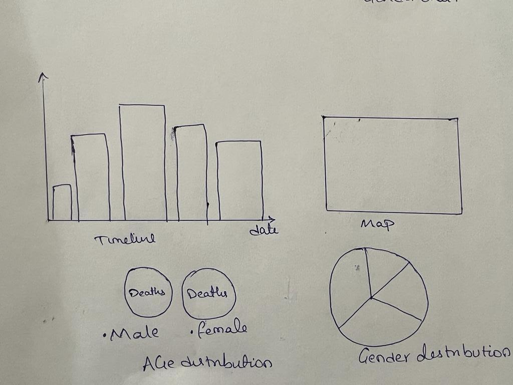
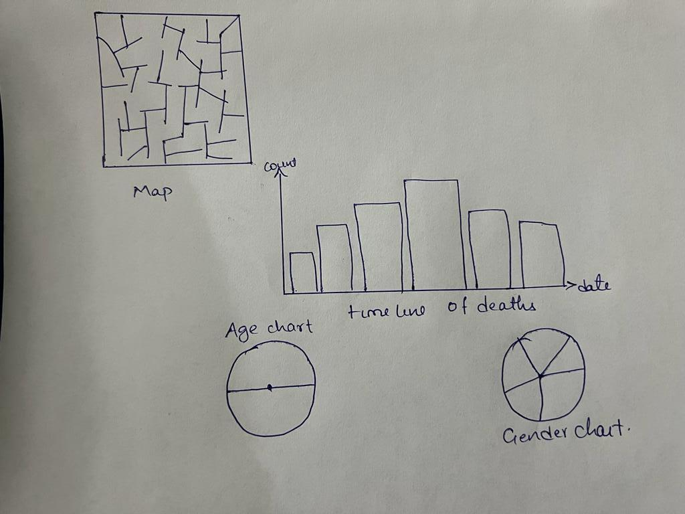
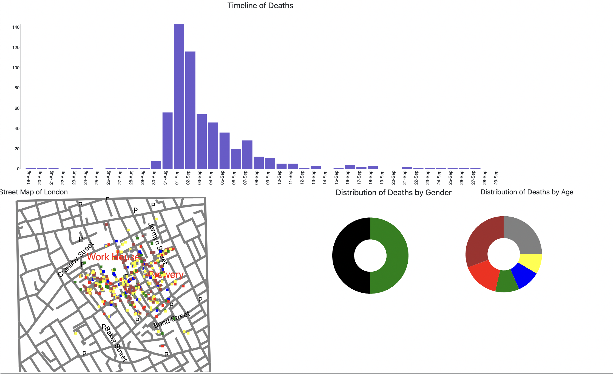
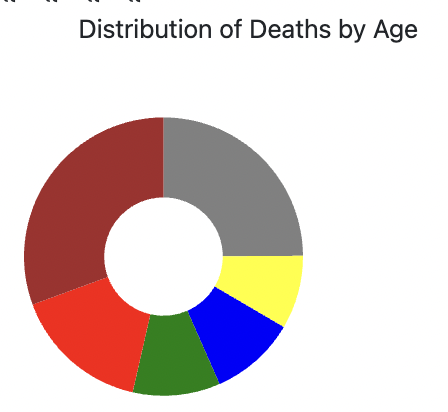
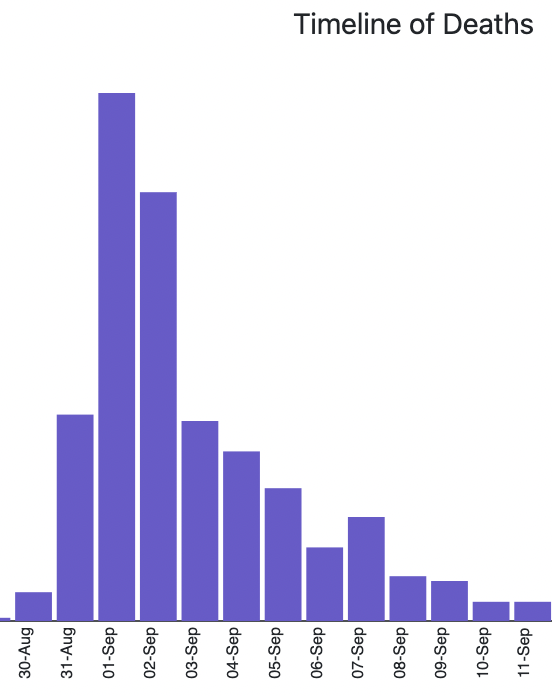
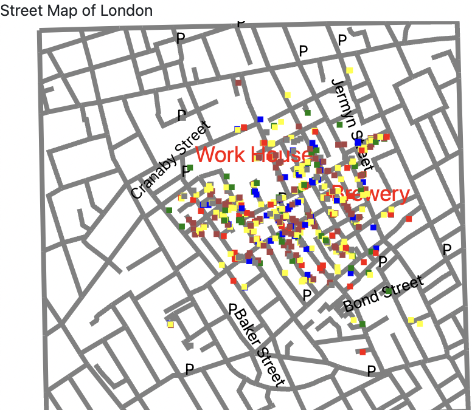

Londons 1854's Cholera outbreak caused serious casualities and has mainly occured due to lack of sanitation facilities and improper living conditions of the residents. Dr. John snow mapped the locations of the major incidents to water pumps located in the area.John snows visualizations helped identify the sources of the outbreak and reduced its future effects. The following recreation was made to identify John snows cholera map patterns of the outbreak and mitigate its effects using visualization.
To create interactive visualizations i created a bar chart , a map visual and pie charts depicting the variations of deaths recorded in dataset as per their age and gender.
Initial idea was to design the visuals with multiple pie charts around the time line chart as in initial design1.
Later map and pie charts were added to the side and the visualization was centered around the timeline of deaths as the data interacts as per change in timeline chart. with the hover over time line of death bar chart the deaths of residents are visualised in the map,
and pie charts.the visulas are cumulative,and are calculated till the date of selection on the time line chart.
Initially to demonstrate the variations of death of residents as per gender i wanted to make two separate eliptical representations as below to show the number of deaths, but later changed to a singular pie chart to understand the outbreak affects in terms of a singular representation.
Comparision of the gender variation in a singular pie chart seemed more logical and so the below design was made.Later i moved all the graphs below the timeline to give timeline chart more space and to have all the visualizations in a single line.
Finally i added visualizations as below , with timeline being the center and other visulas below it.There is a selection radio button. , on the top of the visualization page and when selected, you can toggle between age and gender change in the map visual. when the mouse is hovered over the death dates the bar chart cummulates the data till that date and visuals for those dates appear in the map and pie charts.
I added multiple colors to the visualization to make it more appealing and to better understand the variations of data in the pie charts. I used general colors to fill the rectangles in the map and the same ones are added to pie charts with legends on top for reference.
1)It can be inferred from the visualization that the deaths were more predominant in the age groups of people above 80 years and in children with ages below 10 years as displayed in the below pie chart for one of the days. Immunity variations and advanced age could be the main factors for this occurence.The deaths of residents increase exponentialy and gradually decrease and there is no common pattern of deaths observed between gender data.
2) From the timeline bar graph, majority of deaths have happened in the date from 30th aug to 11 th sep as in below picture and during this time age groug (>80) has been affected the most and has recorded about 1/3rd of deaths overall
3)From the street map , many deaths nave been noted around the pumps of jeremyn street and bond street .There are 3 pumps in the location whose water could have been contaminated , causing the spread of cholera apedic to their consumers .

1.https://stackoverflow.com/questions/
2.https://www.demo2s.com/javascript/javascript-d3-js-change-the-value-of-the-y-axis-by-30-instead-of-10.html
3.https://d3js.org
4.https://media.nationalgeographic.org/assets/file/Mapping_a_London_Epidemic_1.pdf